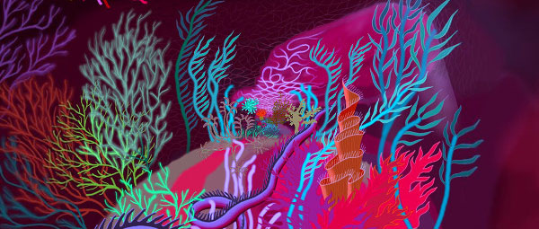
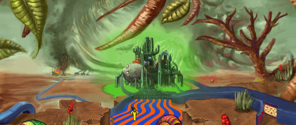

A collaborative infinitely zooming painting
Created in 2004
Up and down keys to navigate
A project by Nikolaus Baumgarten
Participating illustrators: Andreas Schumann, Eero Pitkänen, Florian Biege, Jann Kerntke, Lars Götze, Luis Felipe, Marcus Blättermann, Markus Neidel, Paul Painter, Oliver Schlemmer, Sonja Schneider, Thorsten Wolber, Tony Stanley, Ville Vanninen
Read about the history of this project
Get the Live Wallpaper for Android Arkadia Zoomquilt  Zoomquilt 2 
Do not use without permission